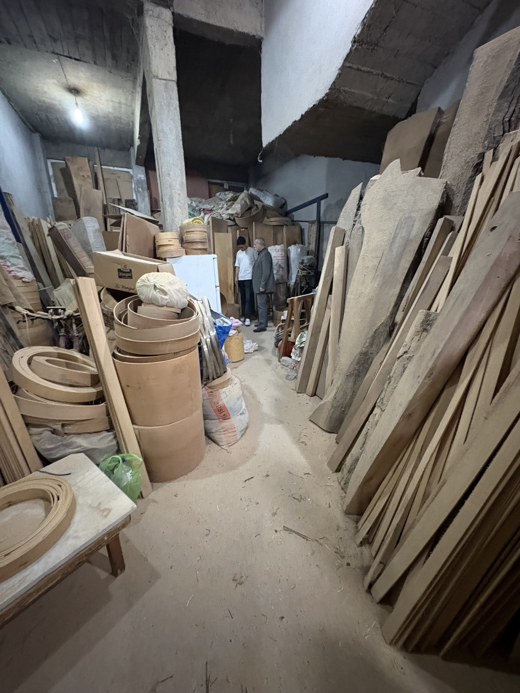

İstediğiniz çap, yükseklik, kalınlık ve ahşap türünü bize iletin; size özel teklif hazırlayalım.
Özel üretimde en hızlı yöntem, ölçüleri ve adet bilgisini doğrudan WhatsApp üzerinden paylaşmak.

İstediğiniz ölçüyü gönderin.
Adet ve ağaç türüne göre fiyatı netleştirelim.
Kesim, kıvırma ve kalite kontrol tamamlanır.
Paketlenir ve sevkiyata çıkar.